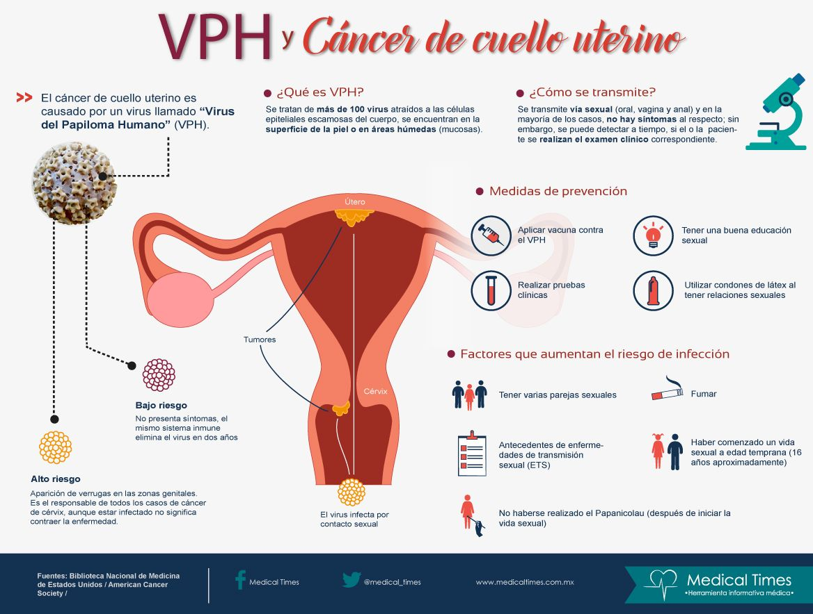
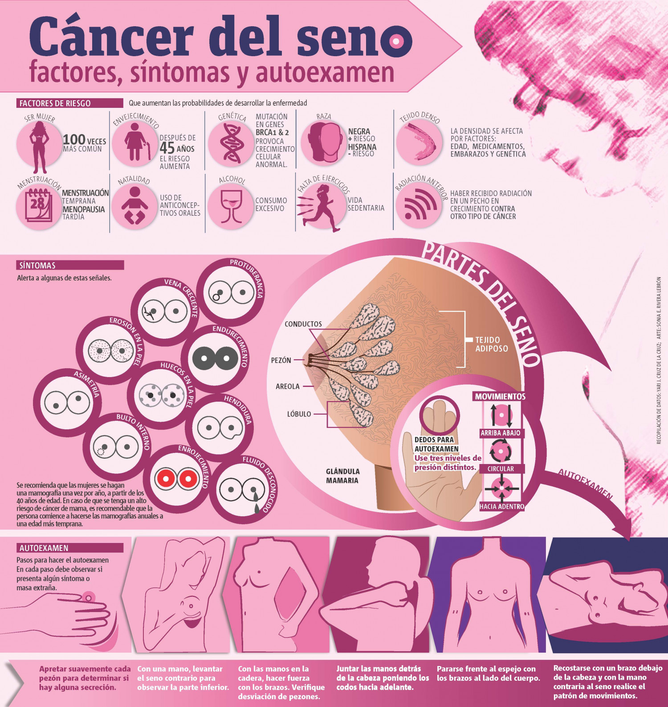

Cáncer de Mama y Útero
-Son los tipos de Cáncer más frecuentes en las mujeres
-La mayoría de los casos de Cáncer Cervicouterino son desarrollados a causa del Virus del Papiloma Humano (VPH)
-Datos del Ministerio de Salud (MINSAL) mencionaron que el Cáncer Cervicouterino es la segunda causa de muerte entre los 20-44 años

